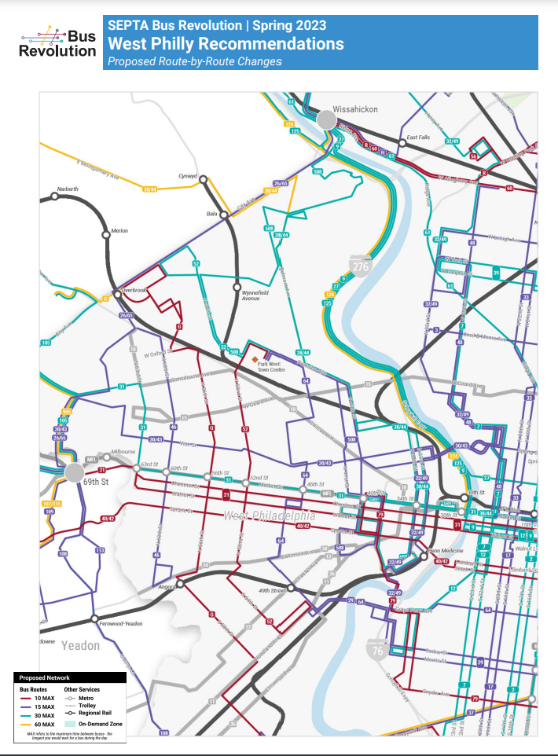

Use This Google Map To Find Directions To Food Banks [Located as the Red Pins]

Faith Chapel Baptist Church Food Pantry
Details:
4720 Woodland Ave, Philadelphia, PA 19143, #:215-724-5144,
Saturdays and Sundays, 10AM to 2PM,
Provides breads, canned goods, poultry, etc
Cathedral Table Ministries Food Pantry
Details:
19 S 38th St, Philadelphia, PA 19104
215-386-0234
Monday, 9:30–11 AM
People's Emergency Center Food Pantry
Details:
325 N 39th St, Philadelphia, PA 19104
267-777-5880
Thursday, 10 AM–12 PM
Choice Pantry (guests may self-choose products on shelves)
Also provides nutrition/cooking classes, SNAP screenings, employment center, computer classes
Mantua Scattered Site Tenant Council Food Pantry
Details:
3802 Mt Vernon St, Philadelphia, PA 19104
267-242-0989
Tuesday. Wednesday, Thursday, 11AM to 1PM
Provides grocery-style items such as canned food, fresh produce, and dry goods like pasta or rice
Details:
4110 Haverford Ave, Philadelphia, PA 19104
215-349-6734
Wednesday, 10 AM–1 PM
Provides pre-packed bags or boxes of food
Saint Ignatius Of Loyola Food Pantry
Details:
636 N 43rd St, Philadelphia, PA 19104
215-386-5065
Tuesday, 10 AM–12 PM
Provides a bag of groceries, once a month
Federally funded
West Philadelphia SDA Grocery Window Food Pantry
Details:
4527 Haverford Ave, Philadelphia, PA 19139
215-222-5707
4th Sunday of the month, 12AM - 2PM
Choice pantry
Church Of The Holy Apostles Food Distribution Center
Details:
260 S 51st St, Philadelphia, PA 19139
267-908-3287
3rd Wednesday of the month, 10:30AM - 12:00PM
Provides pre-packed bags or boxes of food
Wharton Wesley Helping Hands Food Pantry
Details:
5341 Catharine St, Philadelphia, PA 19143
215-472-6777
Wednesday, 9 AM–12 PM
Provides grocery-type items, such as canned food and fresh products
Church Of Christian Compassion Food Pantry
Details:
6121 Cedar Ave, Philadelphia, PA 19143
215-472-9040
Monday 9:30AM-11PM, Tuesday & Wednesday 8:30AM-11PM
Provides grocery-style items that you can cook for yourself
Saint Cyprian Church Food Pantry
Details:
525 S 63rd St, Philadelphia, PA 19143
215-747-3250
Wednesday & Monday, 9:30–11:15 AM,
Provides hot meals, food bags, clothing, and prayers
Salvation Army West Philadelphia Corps Food Pantry Center
Details:
5501 Market St, Philadelphia, PA 19139
215-474-1009
Tuesday, Wednesday, Thursday 9AM-1PM
Provide fresh produce, diaries, meats, diapers, wipes, etc
ECS Saint Barnabas Mission Food Pantry
Details:
6006 W Girard Ave, Philadelphia, PA 19151
215-528-5400
Tuesday to Friday, 10AM-2PM
Provides freezable & healthy meals, a behavioral clinic, and much more
Calvary Agape Outreach Services Food Pantry
Details:
6114 Haverford Ave, Philadelphia, PA 19151
215-472-3460
Tuesday & Friday, 10-11AM
Provides hot lunches, clothes, and events
Universal Family Resource Food Pantry
Details:
5720 Media St, Philadelphia, PA 19151
215-581-5502
Monday to Friday, 8AM-3:30PM
Provides pre-packed or boxed foods
Good Samaritan Baptist Church Food Cupboard & Pantry
Details:
6148-6150 Lansdowne Ave, Philadelphia, PA 19151
610-764-7995
Wednesday 9:00 AM - 1:00 PM
Choice pantry and pre-packed/boxed foods
Freedom Development Corporation Food Pantry
Details:
6100 W Columbia Ave, Philadelphia, PA 19151
215-477-0800
Tuesday, 11:30 AM–1 PM
Choice pantry and pre-packed/boxed foods
Living Waters Baptist Church Food Distribution Center
Details:
7501 Brookhaven Rd, Philadelphia, PA 19151
215-877-1274
Saturday 10:00 AM - 4:00 PM
Pre-packed or boxed foods